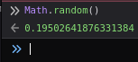
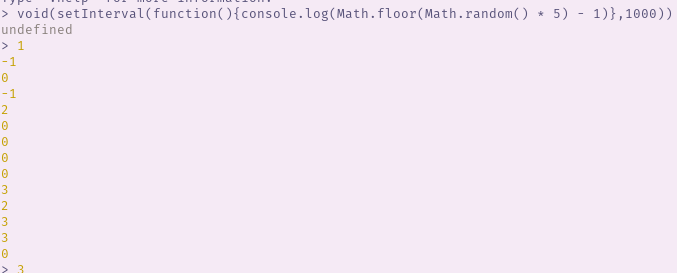
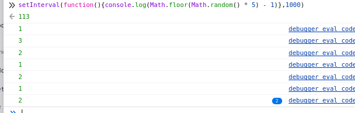

warning: some profanity is used in this post
I was messing around with NGL.LINK and noticed a little counter:
This counter intrigued me, so i popped open inspector, and what do you fucking know, there's no data.
This is the code snippet we are interested in:
setInterval(() => {
let clickCount = parseInt($('.clickCount').text())
clickCount += Math.floor(Math.random() * 5) - 1
$('.clickCount').text(clickCount)
}, 800)The setInterval line is the start of a recurring timer, if you look to the end you'll see it says
"800", so every 800ms we re-run the code. What does the code do though? It first, pulls in the text of
the .clickCount HTML item, which is the counter, then it uses parseInt, a function
that, if a string is only a number, turns it into a proper integer so we can perform mathematical operations on
it, after that we save it as clickCount (a variable) in the next line down we increment clickCount (the
variable) by Math.floor(Math.random() * 5) - 1, what exactly does this mean? First, we run
Math.Random (order of operations and all that jazz), this throws an output like this:

I noticed this code has the possibility to SUBTRACT from the counter, so i ran it manually, interestingly NodeJS
and my browser (firefox) reported different answers, see for yourself.
Ignore the void function wrapping it in node, for some reason node likes printing extra garbage and
i had to void the trash.


Ok, but WHY THE FUCK IS NODE ACTING DIFFERENT TO FIREFOX??? Now I gotta test it in Chrome >:3
Just found a backup of my old site and had to put this post back up.
Also fuck you if you have any of the following on your site: